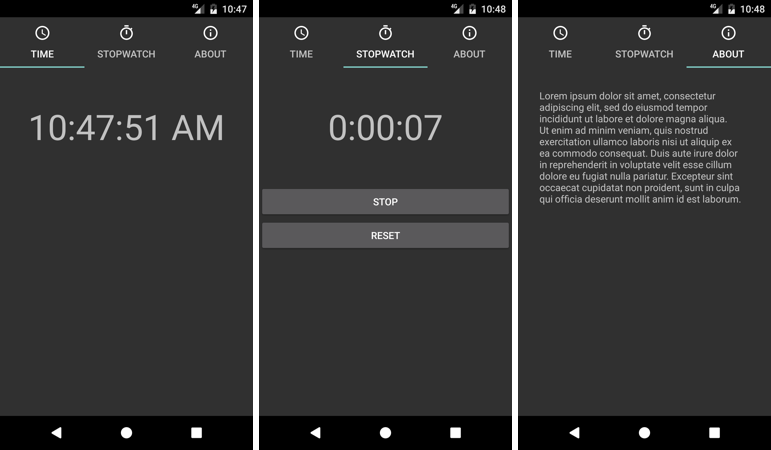

Duration
15 minutes
Goals
The goal of this lab is to add tab navigation to a partially-written app. You will be working on a Clock app that provides the three pages shown below: current time, stopwatch, and about. The individual pages of the app are supplied; your job is to build the main navigation structure. Notice the tabs along the top of the UI; that is the key thing you will be coding.
Required assets
The provided Exercise 2 > Start folder contains the app you will use. There is also a Exercise 2/Completed folder with a solution you can use to check your work. Please make sure you have these folders before you begin.
Steps
Below are the step-by-step instructions to implement the exercise.
Examine the starter code
The supplied code implements the entire Clock app except for the tab navigation part. Before you begin coding, these steps will lead you through an examination of a few key parts of the provided code.
- Open the Clock solution from the Start folder.
- Open Resources > layout > Time.axml in source-code view.
-
Notice that the UI to display the current time is just a
TextView. The string it displays is updated every second from the code-behind. - Open TimeFragment.cs.
-
Note that the
TimeFragmentinherits from the support version of theFragmentbase class. The implementation uses a timer to update the UI once per second. -
The other fragments (
StopwatchFragmentandAboutFragment) are similar. If you have extra time, feel free to examine them; however, there is nothing there that you need to know to continue with the exercise. -
The Android Support Library v7 AppCompat package has been added to the project.
This contains the
Fragmentclass which is used in the implementation of the three fragments (TimeFragment,StopwatchFragment, andAboutFragment). It also contains theFragmentActivityclass used as the base Activity type so you inherit the support version ofFragmentManager. -
The Android Design Support Library package has also been added to the project for you.
This contains the
TabLayout,TabLayout.Tab, andTabItemclasses you will use to implement tab navigation. - Finally, open Properties > AndroidManifest.xml and note that one of the AppCompat themes is used for the Application theme.
Create the tab UI
In this part, you will create the TabLayout and use XML to populate it with three tabs,
one for each of the three fragments (time, stopwatch, and about). The supplied starter code contains
images in the drawable folders that you will use on the tabs.
- Open Resources > layout > Main.axml in source-code view.
-
Add a
TabLayoutto the top of the existingLinearLayout. Use traditional start and end tags because you will be adding tabs inside. Give it an id so it can be accessed from code. The start tag is shown below to save you some typing.<android.support.design.widget.TabLayout android:id="@+id/tabLayout" android:layout_height="wrap_content" android:layout_width="match_parent">
-
Add the
TabItemelement shown below to theTabLayout. This will create the tab for the current-time fragment - notice how it uses "Time" as its text and the "ic_access_time_white_24dp" drawable for its icon.<android.support.design.widget.TabItem android:text="Time" android:icon="@drawable/ic_access_time_white_24dp" />
-
Add a
TabItemelement to theTabLayoutfor the stopwatch fragment. Use "Stopwatch" as the text and "ic_timer_white_24dp" as the icon. -
Add a
TabItemelement to theTabLayoutfor the about fragment. Use "About" as the text and "ic_info_outline_white_24dp" as the icon. - In code, we will use the position of the tabs to identify which tab the user selects. Please check to make sure you added them in the following order: time, stopwatch, about. This will put time at position 0, stopwatch at position 1, and about at position 2.
-
Notice that Main.axml already contains a
FrameLayoutwith an id. This is the container that will display one of the three fragments.
Implement the tab-navigation code
You will use code to swap the visible fragment when the user selects a tab.
- Open MainActivity.cs.
-
Inside
OnCreate, useFindViewByIdto get a reference to theTabLayout. -
Subscribe to the
TabLayout'sTabSelectedevent. -
In your handler,
switchone.Tab.Position. In case0, navigate to theTimeFragment. In case1, navigate to theStopwatchFragment. In case2, navigate to theAboutFragment. Here is aNavigatemethod to swap fragments that you can use if you would like to.void Navigate(Android.Support.V4.App.Fragment fragment) { var transaction = base.SupportFragmentManager.BeginTransaction(); transaction.Replace(Resource.Id.contentFrame, fragment); transaction.Commit(); } -
Currently, the app only shows a fragment when the user selects a tab - this means there won't
be any fragment visible at startup. Please fix this by navigating to the
TimeFragmentfrom theMainActivity.OnCreatemethod. - Run the app to test your work.
Summary
In this exercise, you used the Design Support Library's TabLayout class to implement tab navigation.
Since there were a fixed number of tabs, you could add them in XML. The code responded to tab-selection
events by swapping the visible fragment.